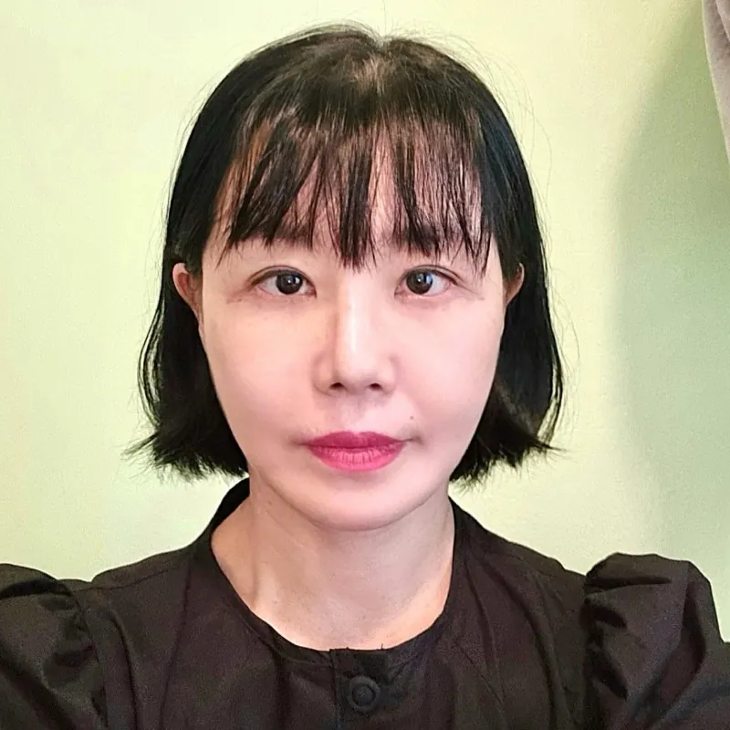

关于凡是与美
医生的问候
使命与愿景
院内设施指南
咨询信息
整形外科
面部轮廓
鼻子
鼻科耳鼻喉科
正颌手术
眼睛
中年眼
抗衰老
乳房手术
塑形
男性整形手术
医生专家团队
明星医疗团队
医生团队
社区
凡是与美博客
星号
今日整形外科
真实自拍
凡是与美 B&A
手术评论
事件
咨询
价格咨询
在线咨询
韩国
英语
日语
简体中文
繁體中文
越南语
泰语
西班牙语
蒙古语
印度尼西亚语
俄语
阿拉伯语
韩国
英语
日语
简体中文
繁體中文
越南语
泰语
西班牙语
蒙古语
印度尼西亚语
俄语
阿拉伯语
活动
咨询
价格咨询
WhatsApp
咨询
价格咨询
WhatsApp
社区
手术心得
Surgery Reviews
Real experiences and information shared by our patients
ALL
Face Contouring
Nose
ENT Nose
Orthognathic Surgery
Eye
Middle Age Eye
Anti-aging
Breast Surgery
Body Contouring
Male Plastic Surgery
face-contouring
Olivia
#Face
#Contouring
nose
Ava
#Nose
face-contouring
Grace
#Face
#Contouring
anti-aging
Claire
#Anti-aging
breast
Ashley
#Breast
#Surgery
face-contouring
nose
Kyunghee Lee
#cheekbone
#squarejaw
#chin
#revisionrhinoplasty
face-contouring
nose
eye
Emily
#Face
#Contouring
#Nose
#Eye
breast
GeongAh Yoo
#Motiva
#BreastAugmentation
#BreastSurgery
nose
Yoojung Choi
#rhinoplasty
breast
SiYeon Kim
#BreastAugmentation
#Motiva
nose
Chloe
#Nose
breast
SeoYeon Hwang
#BreastAugmentation
#Motiva
eye
face-contouring
Jiyong Park
#cheekbone
#squarejaw
#chin
#revisioncanthoplasty
eye
face-contouring
nose
Seoyoon Lim
#cheekbone
#nonincisionalptosiscorrection
#revisionrhinoplasty
breast
YinYeoung Bae
#BreastAugmentation
#Motiva
anti-aging
Youngji Choi
#minilifting
#jawlinelifting
male-plastic-surgery
face-contouring
eye
SeungHee Shin
#MaleFacialContouring
#MaleEyeSurgery
male-plastic-surgery
face-contouring
orthognathic-surgery
JaeMin Jung
#SquareJaw
#CheekBone
#Chin
#3PointFacialContouring
eye
face-contouring
nose
Chaeyeon Kwon
#cheekbone
#squarejaw
#chin
#rhinoplasty
#revisioneyesurgery
male-plastic-surgery
face-contouring
nose
JaeHyun Lim
#CheekBone
#SquareJaw
#Chin
#MaleRhinoplasty
eye
face-contouring
nose
Jiyeon Lee
#IncisionalPtosisCorrection
#Canthoplasty
#TripleContouring
#Rhinoplasty
orthognathic-surgery
face-contouring
Hayan Park
#OrthognathicSurgery
#SquareJawSurgery
#CheekBoneReduction

middle-age-eye
anti-aging
eye
SunYeong Yang
#FaceLift
#LowerBlepharoplasty
male-plastic-surgery
anti-aging
HaSung Lee
#FaceLift
#MiniLift
orthognathic-surgery
YunEae Lee
#OrthognathicSurgery
#SquareJawSurgery
orthognathic-surgery
eye
FANSHI AESTHETICS - id Real Selfie - SunYoung Kin SunYoung Kin
#OrthognathicSurgery
#SquareJawSurgery
#EyelidCorrection
orthognathic-surgery
face-contouring
eye
DaEun Lee
#OrthognathicSurgery
#FacialContouring
#Ptosis
anti-aging
middle-age-eye
eye
HeeJung Kim
#FaceLift
#LowerBlepharoplasty
#BrowLift
#EyelidSurgery
anti-aging
Jihye Choi
#minifacelift
View More